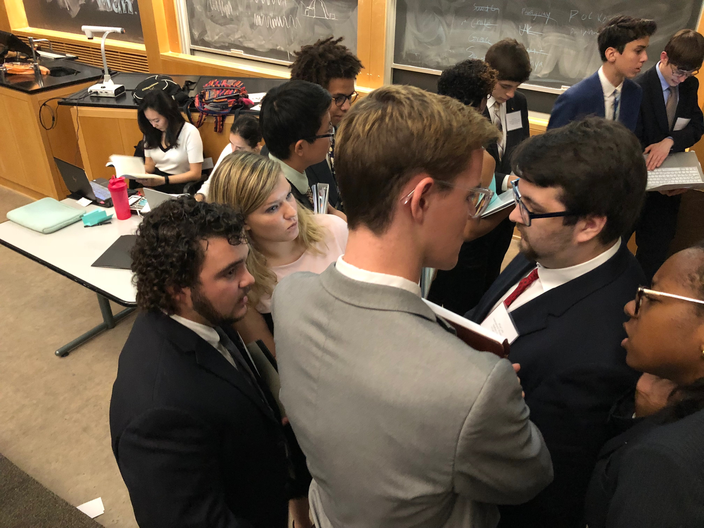

Here at the Madison Academic Model U.N. club, we attempt to simulate the possible events and conditions that the real world U.N. might deal with. Our goal is to advance the understanding better global citizens through quality educational experiences that emphasize collaboration and cooperative resolution of conflict.Participants in Model United Nations conferences, known as delegates, are placed in committees and assigned countries to represent, or occasionally other organizations or political figures, where they represent members of that body. They are presented with their assignments in advance, along with a topic or topics that their committee will discuss. Delegates conduct research before conferences and formulate positions that they will then debate with their fellow delegates in the committee, staying true to the actual position of the member they represent. At the end of a conference, the best-performing delegates in each committee, as well as delegations, are sometimes recognized with awards.